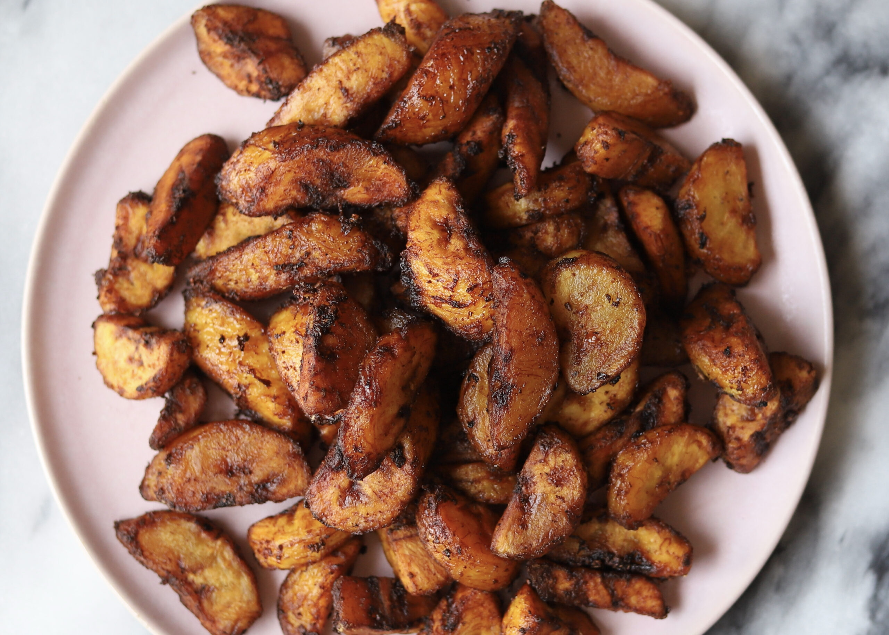

Kelewele or Spicy Fried Plantain

Description
This is a Ghanaian delicacy made from frying ripe plantain coated with spice.
It is taken alone, with grounduts or as an accompaniment.
The choice is definitely yours to make.
Ingredients
- Vegetable oil
- Onion cut into chunks
- Grated fresh ginger
- 2 Whole Cloves, crushed
- Ripe Plantains
- Ground Chili Pepper
- Salt to taste
Steps
- Heat oil in a deep-fryer or large saucepan to 350 degrees F (175 degrees C).
- While the oil is heating, purée onion in a blender until smooth. Stir in ginger and cloves.
- Place plantains in a bowl and pour onion mixture over top. Add chile pepper and salt; mix until plantains are coated.
- Fry plantains in the hot oil until browned on all sides, about 5 minutes. Remove with a slotted spoon and drain on a paper towel-line plate.
Your kelewele is ready to serve!